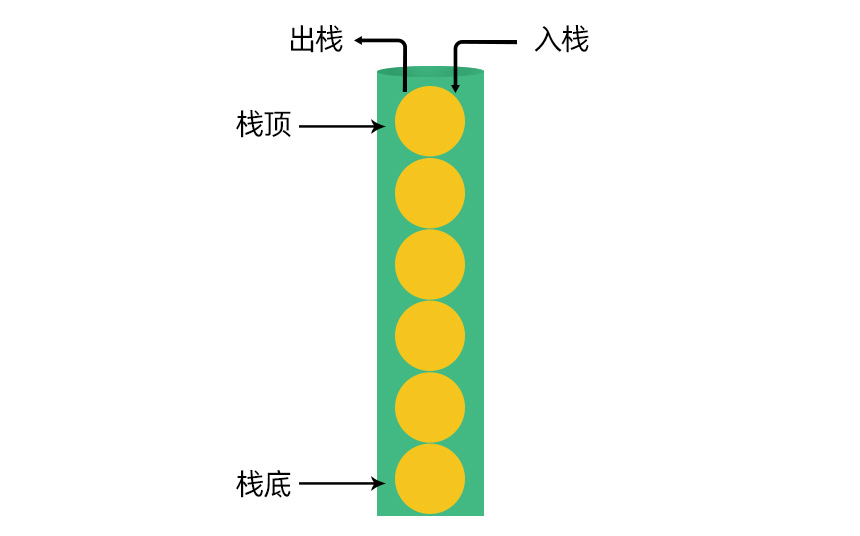

一、手写 flat 方法，指定深度，实现数组的扁平化
flat()方法会按照一个可指定的深度递归遍历数组，并将所有元素与遍历到的子数组中的元素合并为一个新数组返回。
- 我们首先来看下 JS 中数组的 flat 方法
arr.flat(层数)
var arr = [0, 1, 2, [3, [4, 5], 6], 7, 8, 9];
var arr1 = arr.flat(); // 默认将数组展平1层
console.log(arr1); // [0, 1, 2, 3, [4, 5], 6, 7, 8, 9]
>
var arr2 = arr.flat(2); // 将数组展平2层
console.log(arr2); // [0, 1, 2, 3, 4, 5, 6, 7, 8, 9]
- 手写
flat方法源码- 可以用for循环，也可以用forEach
- 由于嵌套了两个函数，所以在第一层一定要自己调用第二层的函数
- 注意为什么要n–、n++
function flat(arr, n) {
var newArr = [];
//for循环遍历
function fn(arr, n) {
//for循环遍历数组的每一个元素
for (var i = 0; i < arr.length; i++) {
//如果是数组，则再次进入函数
if (Array.isArray(arr[i])) {
//用n控制层数，一层代表进入一次本if语句
if (n <= 0) {
//层数用完,直接把该数组塞进新数组
newArr.push(arr[i]);
} else {
//有次数，每进来一次就展开一层，进一次减一次
n--; //n-1后会直接成为后面fn的实参
fn(arr[i], n);
n++; //为了不影响同一层级数组的展开次数
}
} else {
//如果不是数组，则加入新数组
newArr.push(arr[i]);
}
}
}
>
//forEach方法
function fn(arr) {
//for循环遍历数组的每一个元素
arr.forEach(function (el) {
if (Array.isArray(el)) {
//用n控制层数，一层代表进入一次本if语句
if (n <= 0) {
//层数用完,直接把该数组塞进新数组
newArr.push(el);
} else {
//有次数，每进来一次就展开一层，进一次减一次
n--; //n-1后会直接成为后面fn的实参
fn(el, n);
n++; //为了不影响同一层级数组的展开次数
}
} else {
//如果不是数组，则加入新数组
newArr.push(el);
}
});
}
//自己调用fn函数
fn(arr, n);
return newArr;
}
var arr = [0, 1, 2, [3, [4, 5], 6], 7, [8, [ [9], 10]]] ;
console.log(flat(arr, 1));
二、将一个数组旋转 k 步
- 将数组
[1, 3, 5, 7, 9, 11, 13]旋转 K 步
审题：理解题目的意思
假设 k=4 ，即旋转 4 步
- 第一步，得到数组
[ 13, 1, 3, 5, 7, 9, 11 ] - 第二步，得到数组
[ 11, 13, 1, 3, 5, 7, 9 ] - 第三步，得到数组
[ 9 , 11, 13, 1, 3, 5, 7] - 第四步，得到数组
[ 7, 9, 11, 13，1, 3, 5]
即数组旋转 4 步后，得到数组[ 7, 9, 11, 13，1, 3, 5]
- 第一步，得到数组
解题思路
- 方法1：去尾插头
- 每旋转一步，就把最后一个元素删除并调到最前面
- 删除最后一个元素：
.pop - 把元素填充到最前面
.unshift
function rotate1(arr, k) {
//检验输入值
//arr是否为数组
if (!Array.isArray(arr)) return;
//i < k 有隐式转换，所以不用检测k是否为数字
//判断如果数组长度为0，或k不存在，则直接返回原数组
if (arr.length == 0 || !k) return arr;
//考虑k为负数、小数、k的长度大于数组长度的情况
k = Math.abs(k % arr.length >> 0);
//for循环
for (var i = 0; i < k; i++) {
var item = arr.pop();
arr.unshift(item);
}
return arr;
}
var arr = [1, 3, 5, 7, 9, 11, 13];
console.log(rotate1(arr, 4));
- 方法2：拆分数组，然后拼接
- 要旋转k步，就把倒数k个元素组成数组，调到最前面
- 把最后k个元素组成数组：
.slice - 把剩余元素组成一个数组：
.slice - 数组拼接：
.concat
function rotate1(arr, k) {
//检验输入值
//arr是否为数组
if (!Array.isArray(arr)) return;
//i < k 有隐式转换，所以不用检测k是否为数字
//判断如果数组长度为0，或k不存在，则直接返回原数组
if (arr.length == 0 || !k) return arr;
//考虑k为负数、小数、k的长度大于数组长度的情况
k = Math.abs(k % arr.length >> 0);
//取出倒数k个元素
var item1 = arr.slice(-k);
//取出剩余元素
var item2 = arr.slice(0, arr.length - k);
//组成新数组
return item1.concat(item2);
}
var arr = [1, 3, 5, 7, 9, 11, 13];
console.log(rotate1(arr, 4));
- 复杂度分析
- 方法1：时间复杂度是 O(n2) 、空间复杂度 O(1)， 为什么呢？
- 因为
unshift相当于一个for循环，每新增一个元素，其他所有元素的索引都会变化 - 而所定义的变量都是基本数据类型，输出单值；与输入量无关
- 因为
- 方法1：时间复杂度是 O(n2) 、空间复杂度 O(1)， 为什么呢？
- 方法2：时间复杂度是 O(1)、空间复杂度是 O(n)
- 没有用到for循环，执行次数是可数的
- 定义两个数组，并且所需要的内存空间与输入量成正比
- 性能测试
- 测试得出结果的时长
// 输入量要比较大
var arr = [];
for (var i = 0; i < 100 * 1000; i++) {
arr.push(i);
}
>
console.time("rotate");
rotateArr(arr, 4000);
console.timeEnd("rotate");
- 对比结果
- 随着数据规模量变大和旋转次数的增多，方法2的耗时变化不大，但方法1的耗时巨增。
- 在前端领域是重时间轻空间的，所以我们肯定首先思路 1
三、字符串中括号匹配是否正常
判断一个字符串中的括号{} [] ()是否匹配正常，这是一个非常经典的面试题。
审题：理解题目的意思
- 字符串1：
a{(b{c[1,2,3]})}的匹配是正常的 - 字符串2：
a{(b{c[1,2,(3)}]的匹配是错的
- 字符串1：
栈
这个问题本质是在考查什么呢 ？
- 他是在考你理不理解栈这种数据结构，如果你会，那这个题就很容易做了。
- 所以我们先来了解下，栈这种数据结构，然后再回过头来看，这道题如何解。
- 什么是栈
- 栈是一种先进后出的数据结构，要弄明白什么是栈，我们先举一个生活中的例子来帮助大家理解
- 假如你现在有一个长长的圆筒，圆筒的一端是封闭的，另一端是开口，现在往圆筒底部放气球，那先放的是不是在圆筒的底部，后放的是不是在靠近圆筒的位置，如下图：
- 我们现在要从圆筒中取出气球，那我们是不是得先取离圆筒出口最近的一个，即取球时的顺序正好和放的时候的顺序是反的。
- 我们把圆筒比喻从栈，那放气球的过程叫入栈(压栈)，拿气球的过程叫出栈；
- 圆筒的底部称为栈底，圆筒出口的第一个气球位置叫栈顶。
总结：
- 栈是什么：栈是一种先进后出的数据结构（逻辑层面）
- 入栈：进栈时，先进去的在底部，后进去的在栈顶
- 出栈：出栈时，先进去的后出，后进去的先出
- 数组演示入栈和出栈
- 如果我们把数组想象成一个栈结构，最左边是栈底，最先放入元素，最右边是栈顶
- 入栈：相当于
push元素时，从左往右放入元素 - 出栈：相当于
pop删除数据，从最右边的第一个元素开始删
// 声明一个空数组，用来当成栈
var arr = [];
>
// 向数组中添加元素
for (var i = 0; i < 6; i++) {
arr.push(i); // 入栈
console.log(arr);
}
>
// 取出数组中的元素
for (var i = 0; i < 6; i++) {
arr.pop(); // 出栈
console.log(arr);
}
- 栈和数组的关系
- 本质上栈和数组完全不是一个层面上的东西，是不能拿 来做比较的
- 栈：是一种逻辑结构，是一种理论模型，他是抽象出来的一种结构。
- 数组：数组是一种物理结构，是实实在在存在的，可能用来操作的和存储数据的，同时还提供了相关的 API，让我们来操作数组。
我们有很多种方式来实现栈这种结构来存储和取数据等，其中数组就可以实现栈这种结构来存储和操作数据。
- 利用栈结构思想来解题
- 我们可以用
for循环来遍历字符串中的每一个字符串 - 声明一个空数组
- 遇到左括号
{ ( [就压栈，存入数组中 - 遇到右括号
] ) }，就判断栈顶是否与当前括号匹配，匹配就出栈，删除该括号，接着查看下一个符号因为右括号只能与离自己最近的左括号匹配，不会间隔其他括号，所以只需逐个排除
- 最后判断栈中数据的
length长度是否为 0，如果不为0，则不匹配，为 0 就匹配成功一旦有一个括号不匹配，整个数组就是不匹配的
- 我们可以用
- 代码实现
- 粗糙版
function matchStr(str) {
//先转为字符串
str = str + "";
// 如果长度为0，则直接返回true
if (str.length === 0) return true;
//定义新数组
var arr = [];
//for循环,遍历字符串的每个元素
for (var i = 0; i < str.length; i++) {
//遇到左括号就存入/压栈
if (
str[i] == "{" ||
str[i] == "[" ||
str[i] == "(")
{arr.push(str[i]);}
else if (
str[i] == "}" ||
str[i] == "]" ||
str[i] == ")")
{
var arrTop = arr[arr.length - 1];
if (
(arrTop == "{" && str[i] == "}") ||
(arrTop == "[" && str[i] == "]") ||
(arrTop == "(" && str[i] == ")")
) {arr.pop();}
else {
// 如果不匹配，直接返回false，也就意示着整个字符串括号不匹配
return false;
}
}
}
return arr.length === 0;
}
>
var str = "a{(b{c[1,2,3]})}";
var str1 = "a{(b{c[1,2,(3)}]";
console.log(matchStr(str)); //true
console.log(matchStr(str1)); //false
- 完善版
function matchStr1(str) {
//先转为字符串
str = str + "";
// 如果长度为0，则直接返回true
if (str.length === 0) return true;
//定义新数组
var arr = [];
// 定义一个变量用来放左括号的字符串
var leftSymbols = "{[(";
// 定义一个变量用来放右括号的字符串
var rightSymbols = ")]}";
//for循环,遍历字符串的每个元素
for (var i = 0; i < str.length; i++) {
//遇到左括号就存入/压栈
if (leftSymbols.includes(str[i])) {
arr.push(str[i]);
} else if (rightSymbols.includes(str[i])) {
var arrTop = arr[arr.length - 1];
if (isMatch(arrTop, str[i])) {
arr.pop();
} else {
return false;
}
}
}
// 如果arr长度为0，说明全部匹配成功，返回true，不匹配就返回false
return arr.length === 0;
}
// 检测栈顶元素与当前右括号元素是否匹配
function isMatch(left, right) {
if (left === "{" && right === "}") return true;
if (left === "[" && right === "]") return true;
if (left === "(" && right === ")") return true;
return false;
}
>
var str = "{[]}";
console.log(matchStr1(str)); //true
var str1 = "a{(b{c[1,2,(3)}]";
console.log(matchStr1(str1)); //false
- 算法复杂度分析
- 时间复杂度 O(n)
- 整个过程就一次
for循环，其内部的includes判断，其遍历次数不受输入量的影响，一直是 3 次
- 空间复杂度 O(n)
- 主要是要用一个变量
arr来存储入栈的数据，其大小不会完全受输入量的影响，但是输入量大，也是有一定影响的，所以定为 O(n)
四、找出一个数组中和为 n 的两个数
给出一个有序的递增数组，找出数组中和为 n 的两个数的所有情况
审题
如：
- 找出数组
[1,3,5,7,10,13,15,20,22,25]中和为 20 的两个数的所有情况 - 满足条件的有两组：5 和 15 是一组，7 和 13 是一组
- 找出数组
解题思路
- 方法一：嵌套循环，找到一个数，然后和数组中的其它数都加一遍，如果和为 20，则就保存这两个数
- 方法二：利用单层 for 循环+双指针来实现。
方法一：两层 for 循环嵌套
- 最基础思想：每一个数与数组的每个元素相加遍历一遍
- 优化：
- 每一次循环不用从第一个数开始加，而是从
i+1开始；第一，按照题目要求不能和自己加；第二，在前一轮循环中外层的数已经和本次循环的数加过了 - 每一次内层循环的终点是上一次符合要求的下标
- 每一次循环不用从第一个数开始加，而是从
function findNumber(arr, n) {
var result = []; // 用来存入符合要求的元素
//检查数组
if (!Array.isArray(arr)) return result;
//检查数组
if (isNaN(n)) return result;
var len = arr.length - 1;
var maxLen = arr.length; // 记录上一次找到的元素的下标，确定下次查找的范围
for (var i = 0; i < arr.length; i++) {
for (var j = i + 1; j < maxLen; j++) {
var sum = arr[i] + arr[j];
if (sum == 20) {
var obj = {};
obj.a = arr[i];
obj.b = arr[j];
result.push(obj);
maxLen = j; // 因为是升序，所以下次查找的范围，肯定要小于第一次找到的元素下标
break; // 找到就退出
}
}
}
return result;
}
var arr = [1, 3, 5, 7, 10, 13, 15, 20, 22, 25];
console.log(findNumber(arr, 20));
- 方法二：双指针
指针：
- 在汉语里，指钟表、仪器上面指示时间和度数的针
- 在程序中，指针就是一个变量，相当于保持了对某一数据的引用
- 比如，你定义了两个变量，分别保存数组中的两个不同的元素，就相当于定义了两个指针，分别用来指向数组中的不同元素。
双指针解题思路
- 我们以查找数组 arr =
[1,3,5,7,10,13,15,20,22,25]中和为20的两个数的所有情况为例来讲解 - 这是一个递增的数组 arr，我们定义两个变量
i=0;j=数组长度-1，从数组的头尾开始- 如果
arr[i] + arr[j] > 20则j-- - 如果
arr[i] + arr[j] < 20则i++ - 如果
arr[i] + arr[j] = 20则找到了一组满足要求的数，保存arr[i]和arr[j]，同时i++,j--，继续查找
- 如果
- 当
i = j时，两者重合，就没有查找的必要，所以当i < j时，一直查找
- 我们以查找数组 arr =
function findNumber(arr, n) {
var result = []; // 用来存入符合要求的元素
//检查数组
if (!Array.isArray(arr)) return result;
//检查数组
if (isNaN(n)) return result;
len = arr.length - 1;
var i = 0;
var j = len;
while (i < j) {
if (arr[i] + arr[j] > n) {
j--;
} else if (arr[i] + arr[j] < n) {
i++;
} else {
var obj = {};
obj.a = arr[i];
obj.b = arr[j];
result.push(obj);
i++;
j--;
}
}
return result;
}
var arr = [1, 3, 5, 7, 10, 13, 15, 20, 22, 25];
console.log(findNumber(arr, 20));
- 算法复杂度分析
- 时间复杂度
第一种方式：
- 时间复杂度介于 O(n) 与 O(n2) 之间，如果查找的两数之后比较大，则每次要遍历到数且的最后面才能找到对应的数，如果查找的两数之后较小，则时间复杂度就低，因为很快就找到，并且后面的查找范围也会相应索小
第二种方式： - 时间复杂度为 O(n)
- 时间复杂度介于 O(n) 与 O(n2) 之间，如果查找的两数之后比较大，则每次要遍历到数且的最后面才能找到对应的数，如果查找的两数之后较小，则时间复杂度就低，因为很快就找到，并且后面的查找范围也会相应索小
- 空间复杂度
- 两者的空间复杂度都为 O(1) ，其内存占用，并不因为 arr 增大而成倍成大。
五、二分法找查数组的的某个元素
我们要查找有序数组
[1,3,4,5,7,8,9,12,15,18,30,32,45]中元素值为 15 的元素的下标。
审题：理解题目的意思
- 比如，要找到数组中元素为 5 的下标，则 5 的下标是 3
- 比如，要找到数组中元素为 9 的下标，则 9 的下标是 6
解题思路
思路一：for 循环遍历查找
最简单的方式，就是通过一次 for 循环的遍历，拿当前值与数组中的每个值一个一个做比较，如果全等，则就返回当前数组中元素的下标思路二：二分查找
- 每一次都从剩下元素的中间位置开始查找。
- 二分查找思路和规律
- 我们每一次都要从中间位置查找，所以我们需要有办法得到中间位置元素
- 我们定义三个变量
startIndex、endIndex、midIndex分别来记录当前的起始、结束、中间下标 - 刚开始
startIndex和endIndex的值是知道的，startIndex = 0,endIndex = arr.length - 1 - 通过公式
midIndex = Math.floor((starIndex+endIndex/2))，得到中间元素下标，获取中间元素
- 如果，当前值 > 中间值 ，则下一轮在中间值右边部分的中间查找，这时
- startIndex = midIndex + 1;
- endIndex值不变
- midIndex = Math.floor((startIndex+midIndex)/2)
- 如果，当前值 < 中间值 ，则下一轮在中间值的左边部分中间查找，这时
- startIndex 不变
- endIndex = midIndex - 1;
- midIndex = Math.floor((startIndex+midIndex)/2)
- 如果，当前值 === 中间值 ，则找到，返回midIndex ，即元素下标
- 如果，一轮找下来 ，当midIndex === endIndex时还找不到元素，则说明当前值不在数组中。
- 二分法 + while 循环代码实现
- 上面要重复循环做相同的事，但是我们并不能确定具体的循环次数，所以这里我们不用 for 循环，选用while 循环，只要
startIndex <= endIndex，就可以一直循环下
- 上面要重复循环做相同的事，但是我们并不能确定具体的循环次数，所以这里我们不用 for 循环，选用while 循环，只要
//如果没找到就返回-1
function findIndex(arr, num) {
//检测数组
if (!Array.isArray(arr)) return -1;
//检测数字
if (isNaN(num)) return -1;
var len = arr.length;
var startIndex = 0;
var endIndex = len - 1;
while (startIndex <= endIndex) {
var midIndex = ((startIndex + endIndex) / 2) >> 0;
var midvalue = arr[midIndex];
if (num > midvalue) {
startIndex = midIndex + 1;
} else if (num < midvalue) {
endIndex = midIndex - 1;
} else {
return midIndex;
}
}
return -1;
}
var arr = [1, 3, 4, 5, 7, 8, 9, 12, 15, 18, 30, 32, 45];
console.log(findIndex(arr, 15));
- 二分 + 递归实现
这里还要考虑传过来的参数
startIndex和endIndex的类型处理，参考手写的slice方法来处理，（在面向对象原型和原型链那里），两者代码实现上一模一样
function findIndex(arr, num, startIndex, endIndex) {
//检测数组
if (!Array.isArray(arr)) return -1;
//检测数字
if (isNaN(num)) return -1;
//假如没有传入startIndex和endIndex
if (startIndex == null) startIndex = 0;
if (endIndex == null) endIndex = arr.length - 1;
if (startIndex > endIndex) return -1;
var midIndex = ((startIndex + endIndex) / 2) >> 0;
var midValue = arr[midIndex];
if (num > midValue) {
return findIndex(arr, num, midIndex + 1, endIndex);
} else if (num < midValue) {
return findIndex(arr, num, startIndex, midIndex - 1);
} else {
return midIndex;
}
}
var arr = [1, 3, 4, 5, 7, 8, 9, 12, 15, 18, 30, 32, 45];
var result = findIndex(arr, 9, 0, 15);
console.log(result);
- 算法复杂度分析
- 二分法+while 和 二分+递归 的时间复杂度都是
O(logn)，空间复杂度都是O(1)级别 - 但循环要比递归在性能上更好，因为递归在内部会一直调用函数，所以会更消耗性能。
- 递归代码逻辑更清晰
- 二分法+while 和 二分+递归 的时间复杂度都是
- 只要是有序查找(有序数组)，则必定考虑必二分法 ！
- 只要是二分查找，时间复杂度必包含
O(logn)
六、求字符串中连续最多的字符，以及次数
- 求以字符串
aaabbccddaaaaaffffdddd中，连续出现最多的字符及字数 （以最先出现的为主）
解题思路
- 方法一：for 循环嵌套 + 跳步思想来解决
- 方法二：for 循环 + 双指针
方法一： for 循环嵌套+跳步
- count 用来临时存储连续相同字符出现的次数
- 定义变量 var obj = {char:’’,len=0} 用来保存连续出现最多的字符及次数
- 用两层 for 循环来遍历元素，取出每一个元素，与原字符串做比较
- 如果相等，则统计次数加 1，即
count++- 如果不相等，则把当前统计的次数与
obj.len作比较- 如果
obj.len > count，则更新count的值，同时更新i 和 j的值，开始下一个字符的比较
要特别注意
- 最后一次比较，如果最后的字符是多个连续相同字符，那比较结果相等时，也是要更新数据的
- 如果字符串中只有一个字符时，其第一次比较也就是最后一次比较，两都也是相等，也要更新数据
function findContinuousChar(str) {
// 不管传入的是啥，统一转成字符串
str = str + "";
// obj用来存储连续出现字符最多的字符和次数
var obj = {
char: "",
len: 0,
};
// 如果字符串长度为0
if (str.length === 0) return obj;
// 临时记录当前连续字符的长度,最少出现1次
var count = 0;
for (var i = 0; i < str.length; i++) {
// 每一次循环，重置count的值为0
count = 0;
for (var j = i; j < str.length; j++) {
if (str[i] === str[j]) {
count++;
}
// 如果比较到数组的最后一个元素是相等的，也要更新数据
if (str[i] !== str[j] || j === str.length - 1) {
if (obj.len < count) {
obj.char = str[i];
obj.len = count;
}
// 写在外面，否则会进入死循环
if (j < str.length - 1) {
i = j - 1;
}
break; // 不相等或最后一个元素，退出for循环
}
}
}
return obj;
}
var str = "aaabbccddaaaaaffffdddd";
var obj = findContinuousChar(str);
console.log(obj);
- 方法二：for 循环 + 双指针
- 我们可以利用 for 循环来遍历字符串，把每个字符串取出来
- 定义变量 count 统计临时出现的次数
- 定义变量 obj = {char:’’,len=0} 来记录连续出现次数最多的字符及次数
- 我们定义两个变量，i 和 j，相当两个指针，最开始两个字符串指向同一个元素
function findContinuousChar(str) {
// 用来存储出现连续次数最多的字符及次数
var obj = {
char: "",
len: 0,
};
str = str + ""; // 不管输入的是否是字符串，统一转成字符串
var len = str.length; // 字符串长度
if (len === 0) return obj;
// 定义两个变量，用来做为两个指针，指定元素
var i = 0;
var j = 0;
var count = 0; // 临时记录当前连续字符出现的次数
for (; i < len; i++) {
if (str[i] === str[j]) {
count++;
}
// 这里移动的是i，所以要拿i来做判断
if (str[i] !== str[j] || i === len - 1) {
// 等于的情况没有处理，则不会进到这里面来
if (obj.len < count) {
obj.len = count;
obj.char = str[j]; // 这里是str[j],不要写成str[i]了
}
count = 0; // 重置count的值
j = i; // 更新j的值，开始下一个字符统计
if (i < len - 1) {
i--; // 这里的i--不能放在上面的if中，否则某种情况下会死循环
}
}
}
return obj;
}
var str = "12345566";
var obj = findContinuousChar(str);
console.log(obj);
双指针常用于解决嵌套循环
- 算法复杂度分析
- 方法一 和 方法二的时间复杂度都为
O(n)，空间复杂度也是O(1)
- 方法一 和 方法二的时间复杂度都为
七、快速排序
采用快速排序的算法，将以下数组
[1,33,43,5,76,8,9,12,15,18,30,32,45]按升序来进行排序
什么是快速排序？
- 快速排序是在每一轮排序时，会将数组的中间元素作为基准元素
- 并让其他比基准元素大的元素移到基准元素的一边
- 比基准元素小的元素移到基准元素的另一边
利用二分思想
- 首先找到中间元素
- 遍历数组中的每个元素，每个元素都与中间元素作比较
- 所有小于中间元素的，放一个数组leftArr
- 所有除中间元素外等于中间元素的，放一个数组midArr
- 所以大于中间元素的，放一个数组rightArr
- 然后将这几个数组从左到右拼接到一起
- 当 leftArr 和 rightArrr 长度为 1 时，不用再查找和判了
如果找到midValue值为当前数组中的最大值或最小值时，本次排序相当于只排了一个元素，效率也是会很低。
解题思路
我们有三种方式来实现
- 方法一：利用递归 + slice()方法，这种情况不会动原数组，返回的是一个新数组
- 方法二：利用递归 + splice() 方法，这种情况会动原数组，返回的是一个新数组
- 方法三：利用递归 + 双指针，这种情况不会动原数组，返回的也是原数组
方法一：利用递归 + slice()法
- slice(start,end)查找元素，返回的是包含所查元素的新数组
function quickArr(arr) {
//检查数组
if (!Array.isArray(arr)) return;
if (arr.length <= 1) return arr;
//检查长度
var len = arr.length;
var midIndex = (len / 2) >> 0;
// var midValue=arr[midIndex];
var midValue = arr.slice(midIndex, midIndex + 1)[0]; //slice返回的是一个包含查询元素的数组
var leftArr = [];
var midArr = [];
var rightArr = [];
if (leftArr.length == 1) return leftArr;
if (rightArr.length == 1) return rightArr;
for (var i = 0; i < len; i++) {
if (i == midIndex) continue;
if (arr[i] < midValue) {
leftArr.push(arr[i]);
}
if (arr[i] === midValue) {
midArr.push(arr[i]);
}
if (arr[i] > midValue) {
rightArr.push(arr[i]);
}
}
return quickArr(leftArr).concat(midArr, midValue, quickArr(rightArr));
}
var arr = [1, 33, 43, 5, 76, 8, 9, 12, 15, 18, 30, 32, 45];
var result = quickArr(arr);
console.log(result);
- 方法二：利用递归 + splice()法
- splice(index, deleteCount);删除元素，被删除的元素组成一个数组，被返回
function quickArr(arr) {
//检查数组
if (!Array.isArray(arr)) return;
if (arr.length <= 1) return arr;
//检查长度
var len = arr.length;
var midIndex = (len / 2) >> 0;
// var midValue=arr[midIndex];
var midValue = arr.splice(midIndex, 1)[0];
//slice返回的是一个包含查询元素的数组
var leftArr = [];
var midArr = [];
var rightArr = [];
if (leftArr.length == 1) return leftArr;
if (rightArr.length == 1) return rightArr;
for (var i = 0; i < len; i++) {
if (arr[i] < midValue) {
leftArr.push(arr[i]);
}
if (arr[i] === midValue) {
midArr.push(arr[i]);
}
if (arr[i] > midValue) {
rightArr.push(arr[i]);
}
}
return quickArr(leftArr).concat(midArr, midValue, quickArr(rightArr));
}
var arr = [1, 33, 43, 5, 76, 8, 9, 12, 15, 18, 30, 32, 45];
var result = quickArr(arr);
console.log(result);
方法1和方法2的区别：
- 语法不一样
- splice每次都会删除中间元素，所以在进行for循环时，不需要再像slice一样，循环到中间元素就跳过
- splice会改变原数组，slice不会
- 方法三：利用递归+双指针
- 选定当前组组中的第一个元素作为基准元素（pivot）
- 定义两个变量
left和right，分别指向数组的第一个元素和最后一个元素 - 接下来进行第一次循环
right指针开始(一定要先进行right)，让指针所指向的元素与基准元素比较。如果大于或等于 pivot，则指针向左移动;如果小于 pivot，则 right 指针停止移动，切换到 left 指针- left 指针开始，让指针所指向的元素与基准元素做比较，如果小于等于 pivot，则指针向右移动;如果大于 pivot，则 left 指针停止移动。
- 当 left 与 right 指针都停止后，让 left 指针和 right 指针所指向的元素进行交换。
- 循环条件：left !== right 时才循环，即 left >= right，则停止循环
接下来重第一次循环的动作，开始第二次循环。
- 一直到 left 与 right 指针重合时（相等时），则让
left指针指向的元素与pivot中元素交换。- 接下来 left 左边的元素再循环一遍，left = stratIndex,right = left-1;
- left 右边元素再循环一遍,left = left+1 right = endIndex
- 递归出口：startIndex>=endIndex
function quickArr(arr, startIndex, endIndex) {
if (startIndex == null) startIndex = 0;
if (endIndex == null) endIndex = arr.length - 1;
//递归的出口
if (startIndex >= endIndex) return;
var left = startIndex;
var right = endIndex;
var pivot = arr[startIndex];
//不相等时
while (left !== right) {
while (arr[right] >= pivot && left < right) {
right--;
}
while (arr[left] <= pivot && left < right) {
left++;
}
//left和right都不动时
if (left < right) {
var tempt = arr[left];
arr[left] = arr[right];
arr[right] = tempt;
}
}
//相等时
arr[startIndex] = arr[left];
arr[left] = pivot;
//左边元素排序
quickArr(arr, startIndex, left - 1);
//右边元素排序
quickArr(arr, left + 1, endIndex);
}
var arr = [1, 33, 5, 43, 5, 76, 76, 8, 9, 12, 15, 18, 30, 32, 45];
quickArr(arr);
console.log(arr);
- 另一种写法：
function quickSort(arr, startIndex, endIndex) {
if (startIndex >= endIndex) {
return;
}
>
// 第一轮排序，得到基准元素
var pivotIndex = partition(arr, startIndex, endIndex);
// 根据基准元素，排序左边
quickSort(arr, startIndex, pivotIndex - 1);
// 根据基准元素，排序右边
quickSort(arr, pivotIndex + 1, endIndex);
}
>
function partition(arr, startIndex, endIndex) {
// 获取基准元素
var pivot = arr[startIndex];
var left = startIndex;
var right = endIndex;
>
// 不相等时
while (left != right) {
// 右指针向左移动
while (left < right && arr[right] > pivot) {
right--;
}
// 左指针向右移
while (left < right && arr[left] <= pivot) {
left++;
}
// 交换两者的位置
if (left < right) {
var temp = arr[left];
arr[left] = arr[right];
arr[right] = temp;
}
}
>
// 相等时
arr[startIndex] = arr[left];
arr[left] = pivot;
>
return left;
}
>
var arr = [10, 33, 43, 5, 76, 8, 9, 12, 15, 18, 30, 32, 45];
quickSort(arr, 0, 12);
- 算法复杂度分析
- 方法一和方法二的时间复杂度是
O(nlogn)，外层 for 循环是O(n)，for 循环里面是二分O(logn) - 方法一和方法二的空间复杂度是
O(n)，它所定义的变量是可数的 - 方法三的时间复杂度是
O(nlogn)，但比方法一二所用时间更短，因为concat比较消耗性能，空间复杂度是O(n)，但它所定义的变量是不可数的，因为它不断要进行递归
- 方法一和方法二的时间复杂度是